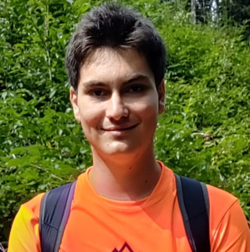

Telcean Alexandru
Data nasterii: 17/09/2001
Cetatenie: romana
Gen: masculin
Contact
🏡str. Principala, 137
507129 Toderita, Romania
📧alexandru.telcean@yahoo.com
alexandru.telcean@ulbsibiu.ro
📞(+40)730661124
|
EDUCATIE SI FORMARE PROFESIONALA
-
01/10/2020 - IN CURS - Bulevardul Victoriei , 10, Sibiu , Romania
Diploma de licenta
Universitatea ""Lucian Blaga", Facultatea de Inginerie
ULBS
-
15/09/2016 - 15/06/2020 - Strada Scolii, 1, Fagaras, Romania
Diploma de Bacalaureat
Colegiul National "Radu Negru"
CNRN
-
15/09/2012 - 15/06/2016 - Strada Vasile Alecsandri, 13, Fagaras, Romania
Diploma absolvire scoala generala
Scoala Gimnaziala "Ovid Densusianu"
SGOD
COMPETENTE LINGVISTICE
Limba materna: romana
Alte limbi:
|
Engleza
|
|
Comprehensiune orala
|
Citit
|
Exprimare scrisa
|
Conversatie
|
Scris
|
|
C2
|
C2
|
C2
|
C2
|
C2
|
|
Franceza
|
|
Comprehensiune orala
|
Citit
|
Exprimare
|
Conversatie
|
Scris
|
|
B2
|
B2
|
B2
|
B2
|
B2
|
COMPETENTE DIGITALE
Microsoft Office (Microsoft Word, Microsoft Excel, Microsoft PowerPoint, Microsoft Access) / C, C++ C#
PERMIS DE CONDUCERE
- AM 19/12/2019 - 19/12/2029
- B1 19/12/2019 - 19/12/2029
- B 19/12/2019 - 19/12/2029
DISTINCTII ONORIFICE SI PREMII
15/05/2019
Concursul regional IBSA - Colegiul Tehnic "Al. I. Cuza" Barlad
Am obtinut locul 2 la concursul bazat pe proiecte informatice prin programarea unui model de joc video.
Facebook
HOBBY-URI
Organizarea turelor montane
Sunt pasionat de participarea in ture montane pe diferite trasee din muntii Romaniei.
Desen
Instagram
VOLUNTARIAT
-
21/06/2018 - 21/06/2018
Bikeathon, Fundatia Comunitara "Tara Fagarasului"
Fagaras
Am participat ca voluntar in cadrul evenimentului caritabil Bikeathon, organizat la Fagaras.
-
01/06/2017 - 09/2017
Asociatia montana Transmont, Fagaras
Fagaras
Am participat la actiuni de remarcare a traseelor montane din muntii Fagaras ,in special zona Breaza-Urlea-Lacul Urlea. De asemenea, am participat la actiuni de informare despre poluare si reciclare in localitatea Fagaras.
Copyright©Telcean Alexandru
|